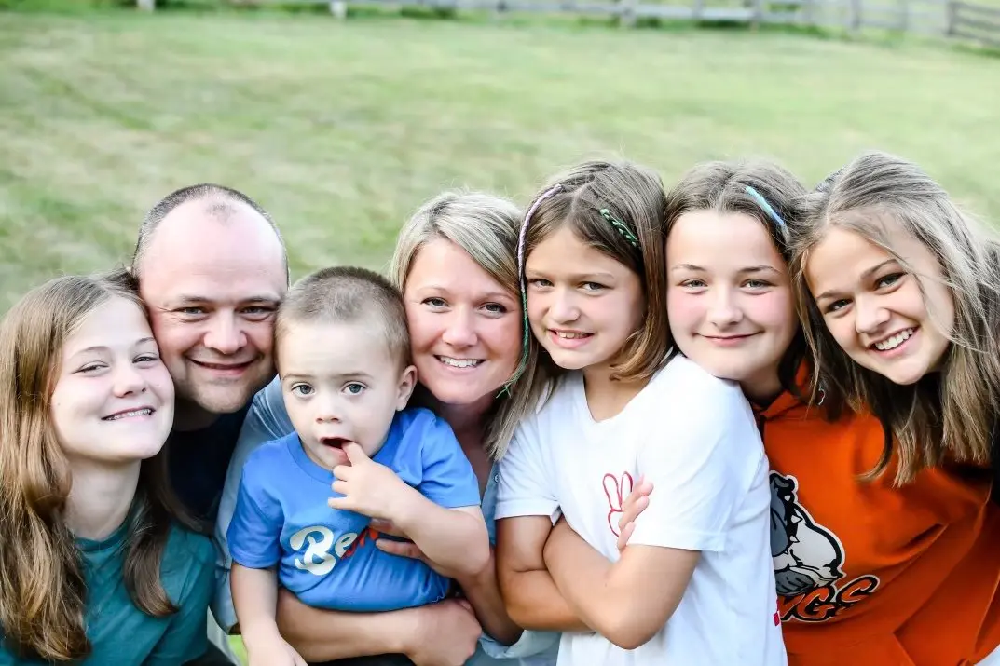

Anthony Sanders | WDD 130
I live in Osceola, WI with my wife and kids. My wife and I have been married for 18 years and we have 5 wonderful children! We have 4 girls and 1 boy. My girls are each a couple of years apart while there is a 7 year difference between my girls and my boy! I love the outdoors and anything I can do with my hands! I also love learning new skills. I'm really enjoying BYU Pathway!